Une envie de fraîcheur ? C’est un vin blanc qu’il vous faut ! Vin blanc sec, vin blanc sucré plutôt moelleux ou bien liquoreux, que vous l'aimiez fruité, floral, végétal, minéral, boisé ou épicé, ce qui est sûr, c'est qu'il aura du bouquet. Pour savoir lequel choisir, Vinatis vous guide avec cette sélection des plus rafraîchissantes !
- Accueil
- BOUTIQUE VINS
- LES VINS BLANCS
Vin blanc
Une envie de fraîcheur ? C’est un vin blanc qu’il vous faut ! Vin blanc sec, vin blanc sucré, plutôt moelleux ou liquoreux, que vous l'aimiez fruité, floral, végétal, épicé, charnu, ciselé, aligoté, il sera raffiné ! Pour trouver de quoi combler vos attentes, Vinatis vous guide avec cette sélection haute en couleur !
BONS PLANS
NOUVEAUTÉ
Nouveauté
J'ai bu : Rejane G.20/09/2023Expert Vinatis
Le
blanc du Domaine de Bila Haut fait parti des classiques à avoir dans sa
cave. Il fera toujours de l'effet auprès de vos convives ! Le must have
avec un plateau de fromages (en particulier un chèvre frais). J'adore
cette harmonie entre le gras du milieu de bouche et la finale vibrante.
Lire le top avis
Une très belle porte d'entrée pour découvrir l'univers du Domaine Bila Haut, propriété de la maison Chapoutier. Elégance et minéralité au programme de la dégustation ...
-22%dès 28,45 €
à l'unité10,90 €
1
Vins blancs par régions
Vins du Monde
Il faut de tout pour faire un monde : VINATIS vous propose des bouteilles juste épatantes, et renversantes à PRIX MINI ! Top départ pour l’Espagne, l’Italie, l’Afrique du Sud, la Nouvelle-Zélande, la Californie... Suivez le guide de nos TOP affaires !!!
Sud-Ouest
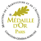
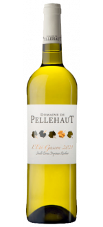FOIRE AUX VINS
Sud-Ouest / Côtes de Gascogne IGP · 10.5% vol
16.7/20 6 notes
J'ai bu : Jules B.27/02/2023Expert Vinatis
Un
vrai rayon de soleil dans le verre! Ce vin fruité et délicieux apporte
beaucoup de fraicheur et sera parfait à déguster en apéro ou avec un
repas léger. A boire bien frais il enchantera les papilles de vos
convives!
Lire le top avis
Foncez sur cette pépite du Sud-Ouest au rapport qualité-prix irrésistible !
-33%10,50 €6,95 €
Jusqu'au 10/10/2023
1
Sud-Ouest
Sud-Ouest / Côtes de Gascogne IGP · 11.5% vol
16.8/20 67 notes
J'ai bu : Édouard H24/09/2023Achat confirmé
Ce
vin a été parfait pour un apéritif au soleil. Un nez très aromatique et
goût très fruité. Avec un prix très accessible, il a parfaitement
rempli sa mission !
Lire le top avis
La référence incontestable des Côtes de Gascogne. Impossible de passer à coté de ce nectar frais et aromatique au rapport qualité prix tout simplement incroyable !
-25%dès 65,70 €
à l'unité7,60 €
Limité à 36 par commande
1
Sud-Ouest
FOIRE AUX VINS
Sud-Ouest / Côtes de Gascogne IGP · 10.5% vol
16.7/20 6 notes
J'ai bu : Jules B.27/02/2023Expert Vinatis
Un
vrai rayon de soleil dans le verre! Ce vin fruité et délicieux apporte
beaucoup de fraicheur et sera parfait à déguster en apéro ou avec un
repas léger. A boire bien frais il enchantera les papilles de vos
convives!
Lire le top avis
Foncez sur cette pépite du Sud-Ouest au rapport qualité-prix irrésistible !
-33%10,50 €6,95 €
Jusqu'au 10/10/2023
1
pAR CEPAGES
L'incontournable Prosecco
Le vin italien qui taquine le Champagne ! Sa renommée mondiale n’est plus à prouver… A déguster en apéritif, ou tout au long d’ un repas, pour préparer des cocktails, c’est assurément LES PETITES BULLES FASHION 100 % italiennes à connaître.
PAR APPELLATIONS
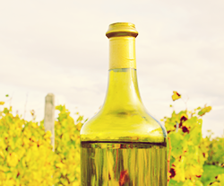
vin de paille
Idéal sur les desserts, le vin de paille est un vin du jura liquoreux riche en arômes, dû au séchage des grappes en passerillage.
vin Jaune
Vin de voile, le vin jaune est surnommé "l'Or du Jura". Sa vinification semble même un défi œnologique.
Porto Blanc
Vin muté portugais, le porto (vinho do porto) existe aussi en nuances de Découvrez notre sélection !
LE vin blanc SUCRÉ, vous l'aimez...
à chaque occasion son vin blanc
QUEL VIN D'HONNEUR POUR MON MARIAGE
Découvrez nos domaines & châteaux
1432 produits
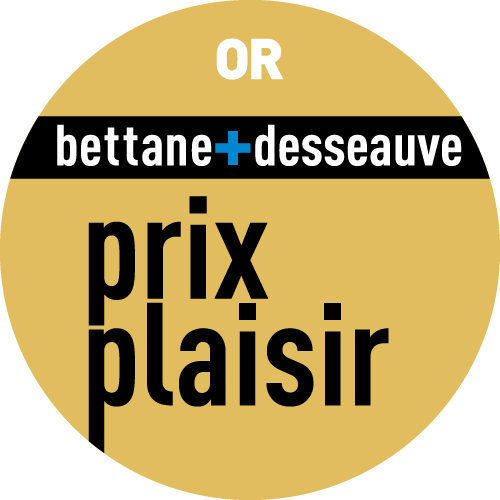
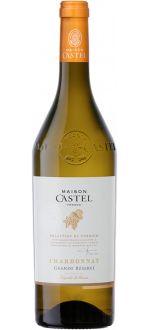Languedoc-Roussillon / Pays d'Oc IGP · 13.5% vol
17.7/20 7 notes
J'ai bu : Guillaume B.25/05/2023Expert Vinatis
Ce
chardonnay est accessible : frais, savoureux avec une belle onctuosité
en bouche. Il plaira sans aucun doute au plus grand nombre.
Lire le top avis
Le savoir faire de la Maison Castel à l'œuvre pour ce Chardonnay : une maîtrise parfaite des qualités !
-15%dès 25,80 €
à l'unité6,90 €
1
Destockage
Provence-Alpes-Côte d'Azur / Côtes de Provence AOP · 13% vol
15.5/20 2 notes
J'ai bu : Margot F.06/03/2023Expert Vinatis
Un
vin à la palette aromatique riche à dominante de fruits exotiques et
d’agrumes qui explosera en bouche. Il s’agit d’un vin blanc équilibré,
riche, structuré et offrant une superbe longueur en bouche.
Lire le top avis
Subtile
alliance entre fruité et finesse, la cuvée Inspiration exprime une
parfaite maîtrise des terroirs issus des Côtes de Provence !
-17%14,50 €11,90 €
Jusqu'à épuisement des stocks.
Plus que 33 disponibles
1
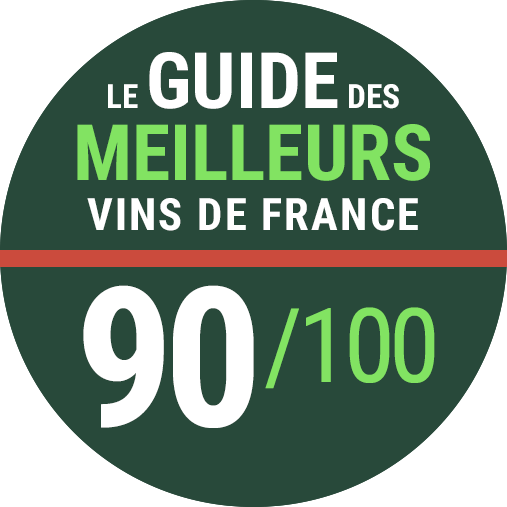
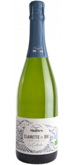Bio
Effervescent / Rhône / Clairette de Die AOP · 7.5% vol
14.9/20 13 notes
J'ai bu : Marc L12/09/2023Achat confirmé
Voici
un vin du Rhône idéal pour l’apéritif ou un désert avec un sorbet ou
une tarte aux pommes car il n'est pas trop sucré, juste ce qu'il faut
pour apprécier ses notes de fruits jaunes .
Lire le top avis
Une
Clairette de Die conviviale et festive ! En amoureux, entres amis ou en
famille, La Colombe se marie au gré de vos envies et de vos palais...
-22%dès 28,90 €
à l'unité11,50 €
1
FOIRE AUX VINS
Sud-Ouest / Côtes de Gascogne IGP · 11.5% vol
17/20 188 notes
J'ai bu : Arnaud L23/09/2023Achat confirmé
Excellent
vin blanc. Coup de cœur hachette 2023, 3 étoiles plus que mérité. De
l'agrume, une robe flatteuse, un équilibre parfait. S'adaptera aussi
bien à des salades qu'à du fromage.
Lire le top avis
Coup de Coeur au Guide Hachette des Vins, cette cuvée incontournable est une pure merveille!
-34%7,50 €4,95 €
Jusqu'au 10/10/2023
1
17.5/20 15 notes
J'ai bu : Rejane G.19/07/2023Expert Vinatis
Morillon
est devenue une cuvée incontournable des vins blancs de la gamme
Languedoc. Elle a su séduire grand nombre de nos clients grâce à son
profil aromatique très flatteur et très accessible et sa qualité
constante. C'est gourmand, frais, fruité…Vous êtes sûrs de ne pas vous
tromper!
Lire le top avis
Ce 100% chardonnay, frais et équilibré va vous subjuguer et vous surprendre ! Encore une réussite signée Jeff Carrel !
-27%dès 68,30 €
-19%dès 39,30 €
à l'unité11,50 €
1
FOIRE AUX VINS
Languedoc-Roussillon / Carcassonne IGP · 13.5% vol
16.3/20 19 notes
J'ai bu : Florence L29/08/2023Achat confirmé
Ma
découverte, et quelle découverte! Connaissant le Chardonnay excellent
pour l’apéritif, j’ai essayé celui-ci. Plus fruité, et plus puissant,
très élégant et extraordinaire avec du poisson ou des fruits de mer . Un
vrai coup de cœur pour cet assemblage. J’adore.
Lire le top avis
-34%7,60 €5,00 €
Jusqu'au 10/10/2023
1
Languedoc-Roussillon / Carcassonne IGP · 13% vol
16/20 90 notes
J'ai bu : Benoit R14/09/2023Achat confirmé
Je me suis régalé avec ce vin, moi qui adore le chardonnay un peu de passage en fut une pure gourmandise.
Un boisé délicat, le côté un peu beurré du fruit; vraiment idéal en apéritif ou sur tout un repas entre les poissons etc.
Lire le top avis
Le 100% Chardonnay du Château Auzias ! Petite parenthèse bourguignonne dans la Cité de Carcassonne !
-20%dès 35,90 €
à l'unité7,40 €
1
18/20 63 notes
J'ai bu : alain m22/08/2023Achat confirmé
Ce
vin au nez d'ananas et de fruit de la passion est très plaisant à la
dégustation. A boire frais à l'apéritif ou sur des entrées ou poissons.
C'est ma deuxième commande pour ce rapport qualité prix assez
incroyable.
Lire le top avis
A ce prix, c'est "Coup de Cœur" ! Déniché par Vinatis en 2015, ce vin s'est imposé en quelques millésimes comme un incontournable de notre gamme "Sud-Ouest" !
🚚 Produit en livraison 24H OFFERTE
-25%dès 67,30 €
à l'unité9,80 €
1
FOIRE AUX VINS
Bourgogne / Saint-Véran AOC · 13% vol
17/20 1 notes
J'ai bu : Clémence P.16/06/2023Expert Vinatis
Un
jolie cuvée, fraîche, tendue, équilibrée et qui ne déçoit pas par ses
arômes. Je recommande, dégusté sur une quiche au thon c'était parfait.
Un Saint Véran petit prix très quali
Lire le top avis
Onctueux et révélant une remarquable minéralité, succombez dès à présent au charme de ce Saint-Véran !
-30%19,90 €13,90 €
Jusqu'au 10/10/2023
1
FOIRE AUX VINS
Loire / Vouvray AOC · 11.5% vol
18/20 3 notes
J'ai bu : Marine M06/09/2023Achat confirmé
Ce
Vouvray est une vraie pépite! Plein de fraicheur et très aromatique. Je
l'ai dégusté à l'apéritif et son côté demi-sec est très agréable! Idéal
avec des toasts au saumon.
Lire le top avis
Une bombe de fraîcheur et de fruits ! A déguster sans plus tarder
-34%12,90 €8,50 €
Jusqu'au 10/10/2023
1
FOIRE AUX VINS
16.6/20 11 notes
J'ai bu : Jean Marie V26/09/2023Achat confirmé
Un
Chardonnay gourmand, fruité et floral avec une belle profondeur
aromatique. Beaucoup de rondeur, le tout en restant un vin sec. Une
valeur sure d’année en année.
Lire le top avis
Que de légèreté, de peps et de modernité réunies dans ce 100% Chardonnay !
-27%9,90 €7,20 €
Jusqu'au 10/10/2023
1
FOIRE AUX VINS
Savoie-Bugey / Savoie AOC · 11.5% vol
17/20 1 notes
J'ai bu : Jonathan R12/09/2023Achat confirmé
En
plein découverte de cette appellation j'ai acheté cette quille sans a
priori. Grand bien m'en a pris, quelle jolie cuvée florale, minérale,
tendue. Un régal qui rappellera certains chenins.
Lire le top avis
Découvrez
absolument ce vin typique de Savoie qui a bluffé nos experts et le cœur
du Guide Hachette, au rapport qualité prix imbattable !
-24%10,00 €7,60 €
Jusqu'au 10/10/2023
1
FOIRE AUX VINS
Languedoc-Roussillon / Pays d'Oc IGP · 13% vol
16.7/20 3 notes
J'ai bu : Jules B.08/03/2023Expert Vinatis
Un
Viognier tout en délicatesse et qui ne manque pas de fraicheur, sur des
arômes de pèche blanche et de fleurs d’acacia très agréables !
Lire le top avis
La bouteille idéale pour des apéritifs dînatoires réussis !
-34%9,90 €6,50 €
Jusqu'au 10/10/2023
1
FOIRE AUX VINS
17.1/20 12 notes
J'ai bu : Florent s21/08/2023Achat confirmé
Un
très bon vin chardonnay à découvrir et à adopter.. A chaque fois , ce
vin est apprécié par les personnes avec qui je le partage. D'une
couleur jaune brillante aux reflets dorés, son nez dévoile des arômes
d'amande fraiches et une belle fraicheur au final. Une vrai réussite
Lire le top avis
La célèbre maison Bourguignonne Louis Latour a misé sur l'Ardèche pour produire des IGP haut de gamme. Le talent et le savoir-faire ont fait le reste. A vous d'en juger...
-27%17,90 €12,90 €
Jusqu'au 10/10/2023
1
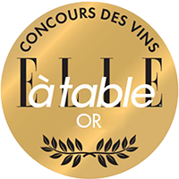
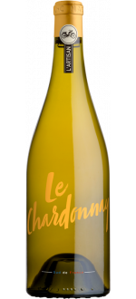FOIRE AUX VINS
Languedoc-Roussillon / Pays d'Oc IGP · 13.5% vol
16.5/20 16 notes
J'ai bu : Bernardo P16/08/2023Achat confirmé
Ce
Chardonnay des Domaines Paul Mas est une petite merveille. Frais mais
beurré, ce vin dont le nom dit beaucoup — L'Artisan — est un vin où l'on
sent la main de ceux qui le produisent sous le généreux soleil de son
beau pays.
Un vin excellent a ce prix.
Lire le top avis
"Un Chardonnay qui a offert au jury de bien belles sensations" Guide Hachette 2024
-23%8,90 €6,80 €
Jusqu'au 10/10/2023
1
FOIRE AUX VINS
Loire / Pouilly-Fumé AOC · 13.5% vol
17.3/20 7 notes
J'ai bu : Laurence L29/08/2023Achat confirmé
Excellent vin, fruité et très agréable en bouche.
A été apprécié par l’ensemble de mes convives.
Peut se marier aussi bien avec du poisson, des grillades au barbecue et même certains fromages.
Lire le top avis
Fruité, minéralité et élégance sont les maitres mots de la dégustation de ce Pouilly Fumé.
-21%14,90 €11,75 €
Jusqu'au 10/10/2023
1
FOIRE AUX VINS
Rhône / Collines Rhodaniennes IGP · 12.5% vol
16.3/20 20 notes
J'ai bu : Bertrand G04/09/2023Achat confirmé
Une
valeur sûre pour vos repas estivaux ! C’est typique du viognier :
frais, vif avec les arômes de la Drôme (pêche, abricot) et un final
doucement vanillé. A ce prix, il ne faut pas se priver !
Lire le top avis
La
beauté d'un 100% Viognier réussi : délicat, onctueux et gourmand...
Tout ce qu'on aime : c'est le coup de cœur de nos clients !
-26%14,90 €10,90 €
Jusqu'au 10/10/2023
1
FOIRE AUX VINS
Etats-Unis · 13.5% vol
18.2/20 5 notes
J'ai bu : Augustine R06/07/2023Achat confirmé
Autant
à l'apéritif que pendant une repas, il est excellent ! Un côté beurré,
toaster et assez gras en bouche il saura accompagner viandes blanches,
grillades, dessert pour casser ce côté sucré.
Lire le top avis
Une vraie bombe de saveurs... Ce Chardonnay californien a fait sensation auprès de nos experts… Pourquoi pas vous ?
-27%19,90 €14,50 €
Jusqu'au 10/10/2023
1
FOIRE AUX VINS
17/20 7 notes
J'ai bu : Caroline T.08/02/2023Expert Vinatis
Frais,
minéral, équilibré, tout ce que l'on attend d'un Chablis, avec le coté
vieilles vignes en plus, et une signature Closerie des Alisiers ! De
quoi ne jamais être déçus pour un apéritif dînatoire entre amis.
Lire le top avis
Goûtez à l'authenticité du terroir chablisien avec la cuvée Vieilles Vignes 2022 signée de la Closeries des Alisiers !
-20%19,90 €15,90 €
Jusqu'au 10/10/2023
1
FOIRE AUX VINS
Bourgogne / Bourgogne AOC · 13% vol
17.3/20 3 notes
J'ai bu : Stephane A31/07/2023Achat confirmé
Un
petit bonbon de chardonnay.....fruité sec ..sur de petites notes
d'agrumes. Un vrai régal en apéritif tout en légèreté sans pour autant
manquer de caractère. Ce bourgogne a fait l' unanimité des convives.
Lire le top avis
La cuvée Sieur Aubry, ou le Chardonnay sous son plus beau profil !
-28%13,90 €9,99 €
Jusqu'au 10/10/2023
1
FOIRE AUX VINS
Effervescent / Italie / Prosecco DOC · 11% vol
16.7/20 23 notes
J'ai bu : Sophie B08/07/2023Achat confirmé
Un
vin très agréable en bouche et parfumé, avec des notes fraiches et
gourmandes. Je recommande pour les soirées d'été entre amis : apéritif,
salades tomates-fraises, chèvre frais et desserts fruités.
Lire le top avis
Le pétillant Italien pour célébrer toutes vos occasions… De belles petites bulles étonnantes au prix canon !
-30%10,50 €7,30 €
Jusqu'au 10/10/2023
1
FOIRE AUX VINS
Italie / Terre Siciliane IGT · 12.5% vol
15.6/20 11 notes
J'ai bu : Karine P.25/04/2023Expert Vinatis
Un
vin blanc de Sicile à la fois frais et fruité. Il accompagne aussi bien
à l'apéritif qu'un plat de fruits de mer ou de grillades. Cette touche
vanillée en fin de bouche vient équilibrer le tout. Je le recommande !
Lire le top avis
Un vin blanc frais et tout en finesse, aux saveurs exquises de la "Région du Soleil" !
-31%6,90 €4,70 €
Jusqu'au 10/10/2023
1
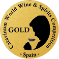
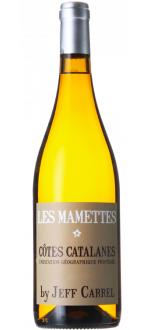Languedoc-Roussillon / Côtes Catalanes IGP · 13.5% vol
16.3/20 13 notes
J'ai bu : Alexis M02/12/2022Achat confirmé
Un
nez discret mais qui rappelle les fleurs blanches et l’abricot frais,
Les Mamettes nous transporte dans le Sud-Ouest de la France au bord de
la mer.
Lire le top avis
Cette cuvée est la dernière née d’une trilogie détonante. Après les Darons et les fistons, il ne manquait plus qu’elle !
-20%dès 27,90 €
à l'unité9,90 €
1
Sud-Ouest / Côtes de Gascogne IGP · 11.5% vol
16.8/20 67 notes
J'ai bu : Édouard H24/09/2023Achat confirmé
Ce
vin a été parfait pour un apéritif au soleil. Un nez très aromatique et
goût très fruité. Avec un prix très accessible, il a parfaitement
rempli sa mission !
Lire le top avis
La référence incontestable des Côtes de Gascogne. Impossible de passer à coté de ce nectar frais et aromatique au rapport qualité prix tout simplement incroyable !
-25%dès 65,70 €
à l'unité7,60 €
Limité à 36 par commande
1
Espagne / Navarra DO · 13% vol
16.8/20 4 notes
J'ai bu : Guillaume B.15/06/2023Expert Vinatis
Le
dernier millésime du Vina Zorzal Garnacha Blanca est tout simplement
superbe : une gourmandise, une fraîcheur, le tout dans une aromatique
digne des plus beaux blancs du Roussillon. Une cuvée d'artisan, de la
dentelle à petit prix !
Lire le top avis
Beaucoup de fraîcheur et de tension, vin toute en élégance vinifié en foudre de 500L !
-15%dès 28,90 €
à l'unité10,50 €
1
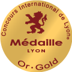
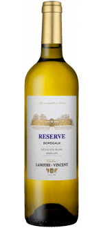FOIRE AUX VINS
16.4/20 8 notes
J'ai bu : Guillaume B.29/03/2023Expert Vinatis
Régulièrement
récompensé aux concours, le Chateau Lamothe Vincenrt devient une
référence de l'appellation. Et le résultat est là ! Une cuvée aux notes
d'ananas rôti, de citron, avec des touches délicatement toastées en fin
de bouche et une subtile minéralité.
Lire le top avis
Avec 3 médailles d'Or, cette cuvée Réserve offre une incroyable expression aromatique!
-30%9,00 €6,30 €
Jusqu'au 10/10/2023
1
FOIRE AUX VINS
17.4/20 13 notes
J'ai bu : Seina H10/09/2023Achat confirmé
Très
bon cru avec des notes plus tropicales que d'autres sauvignons blancs
néo zélandais; melon, agrumes et ananas bien sentis. Bouche pas très
longue mais très bon rapport qualité prix
Lire le top avis
Un superbe Sauvignon de Nouvelle-Zélande à prix canon pour découvrir la beauté de la région de Marlborough !
-29%10,90 €7,70 €
Jusqu'au 10/10/2023
1

Rhône / Côtes du Rhône AOC · 13% vol
17/20 10 notes
J'ai bu : Nicolas B01/07/2023Achat confirmé
Année
après année la qualité de ce vin se maintient. C'est à mon avis *le*
vin à boire pour accompagner des sushis. Il est frais, légèrement sucré,
très aromatique (un peu floral). Rapport Q/P excellent.
Lire le top avis
Remarquable par sa fraîcheur, la maison Perrin fait encore des merveilles sur cette cuvée !
-20%dès 27,90 €
à l'unité9,99 €
1
FOIRE AUX VINS
Sud-Ouest / Côtes de Gascogne IGP · 10.5% vol
16.7/20 6 notes
J'ai bu : Jules B.27/02/2023Expert Vinatis
Un
vrai rayon de soleil dans le verre! Ce vin fruité et délicieux apporte
beaucoup de fraicheur et sera parfait à déguster en apéro ou avec un
repas léger. A boire bien frais il enchantera les papilles de vos
convives!
Lire le top avis
Foncez sur cette pépite du Sud-Ouest au rapport qualité-prix irrésistible !
-33%10,50 €6,95 €
Jusqu'au 10/10/2023
1
FOIRE AUX VINS
15.4/20 5 notes
J'ai bu : Bertrand M11/07/2023Achat confirmé
Rapport
qualité-prix-plaisir imbattable pour les amateurs de vin blanc du
Rhône. Fleurs blanches, fruits à chair blanche, du volume en bouche, une
touche minérale en conclusion. Top!
Lire le top avis
On oublie les soucis du quotidien, on se détend, et on ouvre cette pépite à petit prix sans prise de tête !
-30%8,90 €6,20 €
Jusqu'au 10/10/2023
1
sur 48 pages